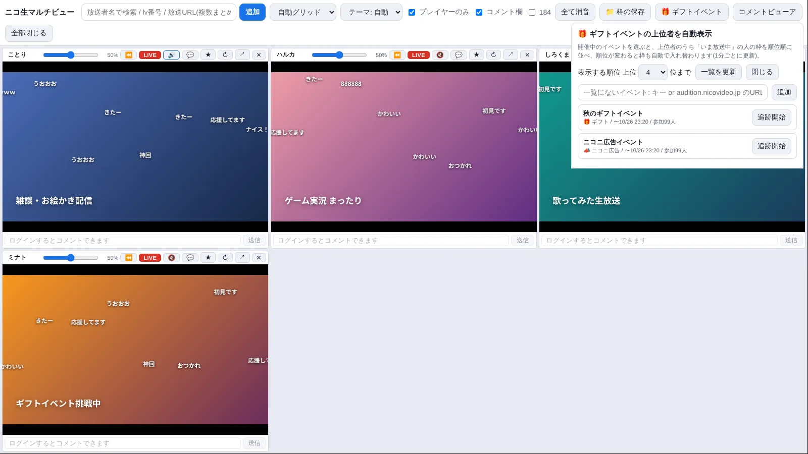
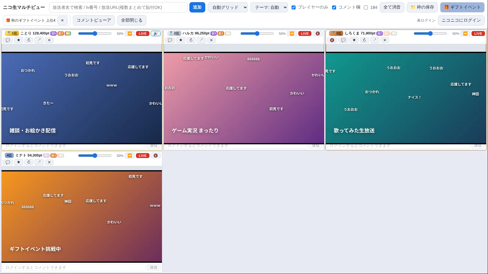

ニコ生を、
複数の窓で同時に。
気になる放送を、画面にまとめて並べて視聴。音量やコメントは枠ごとに調整、ギフトイベントの上位者は自動で並びます。インストール不要、展開してすぐ起動。

画面はイメージです(配信者・放送名は架空)
できること
複数の放送を見比べたり、ながら見したりするための機能を揃えました。
最大12枠を同時に表示
自動グリッド・メイン+サブ・横一列・縦一列。枠はつかんでドラッグして並べ替え。映像そのものをドラッグしてもOKです。
枠ごとの音量と音声ON/OFF
音量スライダーは枠ごとに独立。まとめて追加した枠は最初は全てミュートで、聞きたい枠だけ自分でオンにします。「全て消音 / 全て音声ON」で一括切り替えもできます。
全画面表示
F11 か「全画面」ボタンで、検索窓やボタンのバーを隠して、枠だけを画面いっぱいに表示。Esc で元に戻ります。
コメント投稿と枠ごとの表示切替
公式ログインでコメントを投稿(184対応)。映像に流れるコメントは、枠ごとに隠せます。
統合コメントビューア
全枠のコメントを時系列にまとめて、別窓で表示。放送ごとの色分け・検索・文字サイズ・最前面表示に対応。位置と大きさは次回も保たれます。
放送者名で検索して追加
名前を入力すると、いま放送中の人が候補に出ます。lv番号や放送URLの貼り付け、ブラウザからのリンクのドラッグ&ドロップでも追加できます。
タイムシフトの巻き戻し
枠にマウスを乗せるとシークバーが出ます。⏪(10秒戻し)とLIVE(ライブへ戻る)のボタン付き。※ニコ生プレミアム会員向けの機能です。
枠の保存と呼び出し
いま開いている枠に名前を付けて保存。いつもの組み合わせをワンクリックで開けます。
ライト / ダーク
OSの設定に合わせる「自動」のほか、ライトとダークを選べます。
プレイヤーだけを表示
ページの余計な部分を隠して、映像とコメントだけを枠いっぱいに表示します(切り替え可能)。
ギフトイベントの上位者を自動で並べる
イベントを選ぶだけ。順位が入れ替わると、枠も自動で入れ替わります。

一覧から選ぶ → 上位が並ぶ
「🎁 ギフトイベント」を押して、開催中のイベントを選択。上位1〜12位のうち、いま放送中の人の枠が順位順に並びます。
1分ごとに順位を取り直し、入れ替わったら枠も移動。ラベルに順位・ポイント・召喚獣(通常/改/神)の数が出ます。
追跡を始めるときは、いま開いている枠を閉じる前に、保存するかどうかを確認します。
使い方
インストーラーはありません。3ステップで始められます。
- zip をダウンロードして、好きな場所に展開「すべて展開」でフォルダごと取り出します。フォルダの中身は移動・削除しないでください(exe だけ別の場所に移すと動きません)。
NicoMultiView.exeをダブルクリック初回は、Windows が「PCが保護されました」と表示することがあります。「詳細情報」→「実行」で起動できます(このアプリは署名されていないためです)。- 放送を追加する上の入力欄に放送者名を入れて候補から選ぶか、放送URLを貼り付け。コメントするには、右上の「ニコニコにログイン」からログインします。
- 展開せずに zip の中から起動すると動きません。必ず展開してください。
- 映像・音声が止まった枠は、枠のヘッダの「↻」で読み込み直せます。
- アンインストールは、展開したフォルダを削除するだけです。
よくある質問
料金はかかりますか?
アプリは無料です。ニコ生側の有料機能(プレミアム会員向けのタイムシフトなど)は、ニコニコ側の契約に従います。
ログイン情報は保存されますか?
ログインはニコニコ公式のログイン画面で行い、パスワードをこのアプリが受け取ったり保存したりすることはありません。ログイン状態(Cookie)は、ふつうのブラウザと同じように、この PC のアプリ用データフォルダに残ります。右上の「ログアウト」で消せます。
どこと通信しますか?
ニコニコ関連のサーバー(放送の視聴、検索、ギフトイベントの順位など)にだけ接続します。利用状況の収集や、開発者のサーバーへの送信はありません。
録画や配信はできますか?
できません。このアプリは映像を保存も再配信もせず、公式のプレイヤーで再生しているだけです。画面録画などで公開する場合は、配信者の権利への配慮をお願いします。
放送者名で検索しても出てこない人がいます
名前の検索は「いま放送中の枠がある人」だけが対象です。放送していない人や、ニコニコ側の検索の仕様で見つからない人は出ません。その場合は放送URL(またはlv番号)を貼って追加してください。
ある日突然使えなくなることはありますか?
あります。ニコニコ側のページや内部の仕様が変わると、一部(検索、順位の取得、プレイヤーの表示など)が動かなくなることがあります。非公式ツールのため、その場合は更新をお待ちください。
Mac や スマホでは使えますか?
現在は Windows 10 / 11(64bit)のみです。
ご利用にあたって(必ずお読みください)
非公式ツールです。内容に同意のうえ、ご利用ください。
非公式であること
「ニコ生マルチビュー」は個人が作った非公式のツールで、株式会社ドワンゴ・株式会社KADOKAWA および「ニコニコ」サービスとは一切関係がありません。「ニコニコ」「ニコ生」などの名称・ロゴの権利は、各権利者に帰属します。
免責
本ソフトウェアは現状のまま提供されます。利用によって生じたいかなる損害(アカウントへの措置を含む)についても、作者は責任を負いません。自己責任でご利用ください。
配信者・視聴者の権利
- 映像・音声・コメントの著作権・肖像権などは、配信者や投稿者に帰属します。
- このアプリで見た内容を録画・転載・再配信するときは、配信者の許可と各サービスの規約に従ってください。
ライセンス
このアプリは Electron(MIT)と Chromium(BSDほか)を含みます。配布フォルダの LICENSE.electron.txt と LICENSES.chromium.html にライセンス全文があります。削除せずにお使いください。
再配布について
このページ以外での再配布・改変した配布は、ご遠慮ください(最新版と注意事項をここで案内しているためです)。